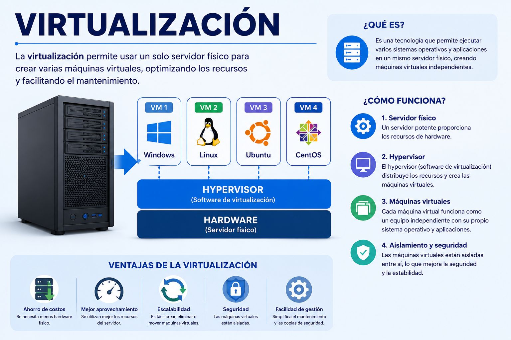

Explicación del concepto
La virtualización consiste en crear entornos simulados dentro de un mismo equipo físico. Esto permite que una computadora o servidor pueda funcionar como si fueran varias máquinas diferentes, cada una con su propio sistema operativo y aplicaciones.
Para lograrlo se utiliza un programa llamado hipervisor, que se encarga de administrar las máquinas virtuales y repartir los recursos del hardware, como memoria, almacenamiento y procesador.
Ejemplo práctico o aplicación
Un ejemplo es una empresa que antes necesitaba varios servidores físicos: uno para correo, otro para base de datos y otro para página web. Con la virtualización puede usar un solo servidor físico y crear varias máquinas virtuales para cada servicio, ahorrando espacio, energía y mantenimiento.
Recurso multimedia

Reflexión personal
Elegí este tema porque demuestra cómo la tecnología puede aprovechar mejor los recursos. La virtualización ayuda a reducir costos y facilita la administración de sistemas. Me parece útil porque actualmente muchas empresas dependen de servidores virtuales para trabajar de forma más rápida y segura.